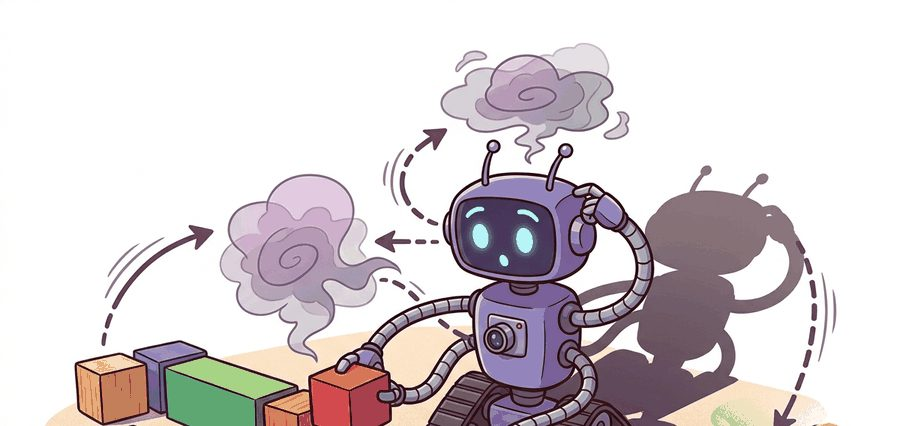
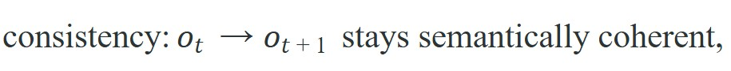
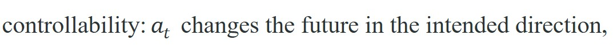
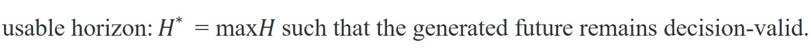
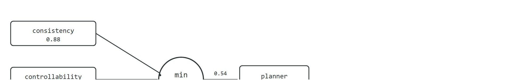

"Agents fail at the bottleneck, not at the mean. Evaluate the minimum, not the average."
A World Model Needs More Than One Score

A robot navigates a warehouse corridor for ten seconds using a video world model, then walks straight through a wall: the model looked photorealistic the entire time. This is not a corner case. As generative world models move from research demos into robot planning pipelines, teams are discovering that perceptual quality and decision-usefulness can diverge completely. The three axes covered here, consistency, controllability, and usable horizon, each catch a different failure mode that a single aggregate score hides. The three axes together form a concrete audit that can be applied to any world model before trusting it to a planner, and Figure 39.7A frames that audit as a closed loop between prediction and action.
Treat this section as the chapter's audit sheet. Each metric exists because a different kind of simulator failure misleads a planner or evaluator in a different way.
The minimum of the evaluation axes is usually the most operationally honest number. Agents fail at the bottleneck, not at the mean.
Hand a planner a world model that scores 0.91 on every perceptual leaderboard, and it may still drive your robot into a wall the metric never saw coming: the number you trusted measured how pretty the future looked, not whether the future obeyed the robot. This section gives you a way to catch that gap, auditing any generative world model along three separate axes, consistency, controllability, and usable horizon, so you can decide whether a planner can trust it. Researchers and product teams love single numbers, but generative world models rarely fail in one dimension. A future can look consistent but ignore action, obey action for a few steps but drift later, or stay persistent while breaking task semantics. Evaluation must therefore expose the failure axis, not hide it. Model uncertainty and calibration interact with all three axes: a well-calibrated generator should signal when its own predictions become unreliable.
A useful evaluation panel separates at least three core properties:



"Decision-valid" means the generated future is close enough to what would actually happen that a planner choosing between actions based on it would make the same choice it would make against ground truth; once the generated frames drift far enough from that, the horizon has been exceeded even if the video still looks smooth.
Consistency is measured the same way the other two axes are: by running a fixed evaluation panel and scoring the output, typically with object-permanence checks (does an object that leaves the frame and returns keep the same identity and position) and geometry checks (does room or hallway layout stay fixed across frames) against a reference trace, rather than by inspecting a single clip for a plausible look. For embodied use, the usable horizon is usually the most revealing number. It measures not how long the model can keep drawing plausible frames, but how long the generated future remains trustworthy enough for policy learning, evaluation, or planning. Figure 39.7B shows why the three axes are combined with a minimum rather than an average: the weakest axis is the one that decides whether a planner should trust the model.

Think of usable horizon like the visibility range on a foggy road. In clear conditions you can plan your lane changes far ahead; as fog thickens, a point arrives where your forward view is no longer reliable enough to act on, even though you can still see something. The usable horizon $H^*$ is exactly that cutoff: not where the image goes blank, but where the image becomes too uncertain to steer by. A world model that produces vivid frames beyond $H^*$ is giving you the sensation of visibility without the substance of it.
Named systems illustrate why these axes diverge in practice. Sora (OpenAI, 2024) demonstrated strong short-clip consistency but was not designed for action-conditional control (control where the model's next output depends on an explicit action input, rather than only on the preceding frames), so its controllability score for embodied planning tasks is effectively undefined. Genie 2 (Google DeepMind, 2024) accepted discrete action tokens and, according to the reported demonstrations, showed measurable controllability over rollouts typically in the 10-20 second range. Its usable horizon has been reported to degrade noticeably beyond roughly 15 seconds of branching in these demonstrations, though the exact cutoff depends on the scene and action sequence tested. NVIDIA Cosmos (2025) targets physical-AI pipelines and reports consistency metrics per domain. In practice it measures usable horizon by downstream policy-improvement results rather than perceptual scores alone. These examples show that the three axes do not move together and must be reported separately.
Of the three axes these systems expose, controllability is the one most often reported loosely, so it is worth pinning down before any cross-model comparison. Controllability deserves its own operational definition rather than a vague reference to "intended direction." In practice, measure it by running a fixed action script (a predetermined, repeatable sequence of commands, used so every model is tested against the exact same inputs), for example, turn left 30 degrees, move forward 2 meters, stop, from a held-out initial state, then compare the resulting observation against a ground-truth simulator or a human-labeled expected outcome at each step. The reference here is a conventional physics engine, not the learned simulator under test. A simple scalar is the fraction of action steps for which the world model's output falls within an acceptable tolerance of the reference. Systems that score high on consistency but low on this probe are generating plausible-looking futures that are essentially action-independent; this is called action-blind hallucination, and it is a critical failure mode for any planner that relies on the model to evaluate counterfactuals. In practice, a model can score 0.88 on consistency while its controllability probe sits at 0.42, meaning the generated future looks coherent but responds to actions at barely chance level.
If a model scores 0.88 on consistency but only 0.42 on controllability, what is the planner actually optimizing against?
Action-blind hallucination is particularly dangerous for physical robots because a planner that samples from such a model receives confident-looking predictions regardless of what action it selects. On a real robot, this breaks the feedback loop that keeps the plan grounded: the robot commits torques, the world changes in ways the model never reflected, and subsequent plans are built on an increasingly fictional premise. Unlike a video-game agent that can reset, a physical manipulator or mobile platform pays the full cost of that divergence in hardware stress, dropped objects, or collisions.
Action-blind hallucination typically traces back to one identifiable mechanism, though other contributing factors are possible. Video generative models train predominantly on action-free video, so they learn a strong temporal prior and a comparatively weak action-conditioning signal. At inference time the model interpolates plausible next frames from its learned motion statistics rather than from the supplied action token. The resulting trajectory satisfies the model's frame-to-frame smoothness objective while ignoring the control input. The data imbalance drives this. A typical internet-scraped pretraining corpus holds on the order of billions of action-free frames, while the paired action-observation data used to fine-tune conditioning may cover only tens of thousands of transitions. The model has seen smooth motion roughly 100,000 times more often than it has seen what a specific action token causes, so the learned motion prior overpowers the control signal.
So far: consistency, controllability, and usable horizon are three separate axes that must be measured with a fixed action script rather than eyeballed; action-blind hallucination is the specific failure where a model looks consistent while ignoring actions, and it arises because pretraining data has vastly more action-free video than action-labeled video.
Because this imbalance corrupts an entire rollout rather than a single frame, the evidence you need to catch it lives in the trajectory, not in a summary number. The evaluation artifact should always include trajectories, not just aggregates. Horizon failure is often visible in one trace long before it meaningfully shifts an average score.
A common assumption is that photorealistic, temporally smooth video makes a world model reliable for robot planning. That assumption is wrong. Perceptual quality and decision-usefulness are independent properties. A model can top the FID or LPIPS leaderboards (Frechet Inception Distance and Learned Perceptual Image Patch Similarity, two standard scores that compare generated frames to real frames on visual statistics alone, with no notion of whether an action was obeyed) while still exhibiting action-blind hallucination: its generated futures look convincing but ignore the agent's control inputs. Visual fidelity is a necessary condition for human inspection, not a sufficient condition for planning. A generated trajectory earns a planner's trust only when it is also action-conditional (controllability axis passes) and remains decision-valid long enough for the plan to execute (usable horizon axis passes).
The usable horizon is essentially asking: "How far into the future can this model lie convincingly?" A world model that renders beautiful hallways for three seconds before silently rearranging them is the architectural equivalent of a film set, photogenic from the front, nothing behind the facade.
Run the same initial state and action script through the generator, score semantic continuity, score whether actions had the intended effect, then determine the first time step at which the future stops being decision-valid. Save both the summary numbers and the trace that broke earliest.
The following snippet computes the minimum of the three axes directly. That minimum is a better deployment signal than the average because the planner will fail where the weakest property fails.
# Combine consistency, controllability, and horizon into a conservative audit.
# The minimum axis is the bottleneck the deployment team must fix first.
metrics = {
"consistency": 0.88,
"controllability": 0.72,
"usable_horizon": 0.54,
}
bottleneck = min(metrics, key=metrics.get)
print({"bottleneck": bottleneck, "audit_pass": min(metrics.values()) >= 0.7}){'bottleneck': 'usable_horizon', 'audit_pass': False}
Expected behavior: The audit fails because the usable horizon is too short even though the short-term clip looks coherent and somewhat controllable. That is exactly the point of the panel: a planner or evaluator needs a long-enough trustworthy future, not merely an attractive first second.
Trace the controllability score with a tiny example. Run the action script (turn left, forward, forward, turn right, stop) from one held-out start state and compare the world-model output against the ground-truth simulator at each step. The acceptance tolerance is "the agent heading and position match within bounds", scored as a per-step pass (1) or fail (0):
Step 1 (turn left): model heading 28 degrees vs reference 30 degrees, within 5-degree tolerance, pass = 1.
Step 2 (forward): model moved 1.9 m vs reference 2.0 m, within 0.3 m tolerance, pass = 1.
Step 3 (forward): model moved 1.4 m vs reference 2.0 m, outside tolerance (model started ignoring the action), pass = 0.
Step 4 (turn right): model heading barely changed, reference rotated 30 degrees, pass = 0.
Step 5 (stop): model drifted forward instead of halting, pass = 0.
Controllability = (1 + 1 + 0 + 0 + 0) / 5 = 0.40. The clip stays photorealistic the whole way, but the action signal dies at step 3: this is action-blind hallucination caught numerically rather than by eye.
Wayve's GAIA-2 (a generative driving-scenario world model trained on real driving footage) is evaluated not on frame realism alone but on whether action-conditioned rollouts (steering and throttle commands) produce the trajectory a planner expects, exactly the controllability axis described here. The team reports usable horizon separately because a generated future that stays decision-valid for only two seconds cannot support lane-change planning, regardless of how sharp the rendered road looks.
The audit logic is tiny, but it becomes powerful when paired with maintained generation backends and reproducible evaluation scripts. The right shortcut is not a automatic simulator-score library. It is a stable harness that replays the same seed states and action scripts against every new model version and stores the traces next to the summary table.
When comparing two model checkpoints on controllability, fix the seed panel using NumPy's np.random.default_rng(seed=42) and store the initial observation tensors as .npy files rather than regenerating them from environment resets. Environment resets in simulators such as Isaac Lab and Habitat are not guaranteed to be deterministic across library versions, so a "same seed" run can silently produce different starting states and make your controllability delta meaningless. Loading the frozen panel files guarantees you are measuring the model difference, not an environment-reset difference.
Averaging over axes can hide the very failure that would sink deployment. If one property is below threshold, the world model should fail the gate even when the average looks healthy.
An evaluation team for a warehouse robot may find that a generated world model preserves object identities and follows turns for three seconds, then silently shortens hallways and changes shelf geometry. A short clip looks fine. A usable-horizon audit reveals that the planner's future became untrustworthy exactly where navigation decisions become harder.
Direction 1: Physics-grounded evaluation metrics. The field is moving away from FID and LPIPS toward metrics that penalize physically incorrect contact dynamics. NVIDIA's Cosmos (2025) introduced domain-specific consistency probes tied to rigid-body and fluid simulation, and the PhysGen benchmark (Liu et al., NeurIPS 2024, a benchmark that scores generated video by physical plausibility rather than pixel similarity) proposes evaluating generated video by whether a physics engine can re-simulate the same event from the rendered frames, catching models that get object velocities wrong by large margins even when the clip looks convincing.
Direction 2: Policy-improvement delta as primary currency. Teams at Google DeepMind (Genie 2, 2024) and at MIT CSAIL (using Open X-Embodiment data, as of 2024) are replacing perceptual leaderboards with the policy-improvement delta: the change in task success rate when a planner switches from ground-truth simulator rollouts to world-model rollouts. A model scoring 0.91 on LPIPS but producing a delta of -0.12 is strictly worse for deployment than a coarser model with a delta of +0.05. The active research problem is reducing the cost of computing this delta from several GPU-hours per checkpoint to something that can run at every training step.
Direction 3: Uncertainty-aware horizon estimation. Rather than reporting a single fixed usable-horizon number, recent work (UniSim, Yang et al., ICLR 2024, a generalist interactive video simulator; and IRASim, Zhu et al., 2024, a robot-manipulation video predictor) trains the world model to emit a per-step reliability score alongside each generated frame, letting a planner truncate its planning window dynamically when the model's own confidence drops below a threshold. This converts the static horizon $H^*$ into an adaptive signal that varies by state and action sequence, allowing longer rollouts in well-covered regions of the state space and shorter rollouts in novel regions.
Open problem: All three directions above are evaluated in isolation, but a deployed robot planner needs them simultaneously: physically grounded frames, accurate policy-improvement prediction, and a calibrated per-step uncertainty signal. No current benchmark evaluates all three axes jointly on the same rollout, and no world model has demonstrated that optimizing one axis does not degrade the others. Designing a joint benchmark and training objective that co-optimizes physical consistency, downstream policy quality, and uncertainty calibration is an open problem that connects evaluation methodology to world-model architecture in a non-trivial way.
For broader embodied-system evaluation design, revisit Chapter 52. For uncertainty and safety, connect to Chapter 53. For compact latent alternatives with different audit needs, compare against Chapter 38.
Good evaluation is not an afterthought to world-model research. It shapes what progress means. If the field rewards only photorealism, models optimize photorealism. If the field rewards task-grounded controllability and usable horizon, model design and data curation follow those incentives. A world model that passes the visual test but fails the planning test is not a simulator: it is a screensaver.
This is why reproducibility matters here. A world model fails on one initial state and looks excellent on another. Without saved seed panels and trace artifacts, evaluation collapses into storytelling; the right artifact makes the failure replayable.
Beginner (weekend): Controllability probe harness in Gymnasium. Build a script that runs a fixed action sequence (turn left, move forward, stop) inside a Gymnasium CartPole or LunarLander environment, records the expected state at each step, then replays the same sequence through a pretrained video world model and computes per-step controllability score. The key challenge is aligning the action space encoding between the Gymnasium environment and the model's conditioning interface so that the same action token means the same physical change in both systems.
Intermediate (1-2 weeks): Usable-horizon benchmark for a MuJoCo manipulation task. Using MuJoCo (via dm_control or Gymnasium's MuJoCo bindings), generate 50 rollouts of a Franka reach task from fixed seed states, then feed the same initial frames and action sequences into a video world model (such as a fine-tuned GAIA-1 or a small video diffusion model) and log the first time step at which the generated object position diverges from ground truth by more than a threshold. The key challenge is defining a task-grounded divergence threshold that reflects when a planner would actually make a wrong decision, rather than a perceptual distance that looks bad but would not affect the plan.
Goal: empirically find the time step at which a learned predictor's generated future stops being decision-valid, and watch the three axes diverge.
Tools: Python with gymnasium (CartPole or LunarLander), numpy, and a small pretrained or quickly trained next-frame/next-state predictor (even a 2-layer MLP world model fit on a few thousand transitions is enough to see the effect).
Procedure (15-30 min): (1) Freeze 20 initial states with np.random.default_rng(42) and save them as .npy. (2) From each state, roll out a fixed action script in the real environment to get ground truth. (3) Feed the same initial state and action script to your predictor autoregressively and log, at each step, the absolute error between predicted and true state. (4) Define usable horizon as the first step where mean error exceeds a task-grounded threshold (for CartPole, pole angle off by more than 0.1 rad).
What to vary: rollout length, the error threshold, and whether actions are repeated vs. branching (alternate left/right). What to observe: consistency (smooth predictions) can stay high while controllability collapses under branching actions, and usable horizon shrinks sharply once you switch from repeated to branching action scripts. Plot per-step error to see the bottleneck axis directly.
If you had to reject a generative world model version today, which axis would you inspect first for your application, and what single broken trace would convince a teammate that the rejection was justified?
Evaluate generative world models by their weakest control-relevant property, because the agent will break at the bottleneck, not at the average.
Create a three-axis evaluation card for one world-model application. Define the acceptance threshold for each axis and describe the exact trace you would save when the model fails that threshold.
NVIDIA. "Physical AI with World Foundation Models." (2026). https://www.nvidia.com/en-us/ai/cosmos/
A platform reference for why evaluation must connect generated worlds to downstream policy development.
Google DeepMind. "Genie 3: A New Frontier for World Models." (2025). https://deepmind.google/blog/genie-3-a-new-frontier-for-world-models/
A current interactive-world-model reference that makes controllability and horizon questions unavoidable.
OpenAI. "Video Generation Models as World Simulators." (2024). https://openai.com/index/video-generation-models-as-world-simulators/
The report motivates the simulator framing that this audit section then tightens.
Continue to Chapter 40: Predictive representations and self..., where this contract becomes the input to the next embodied capability.